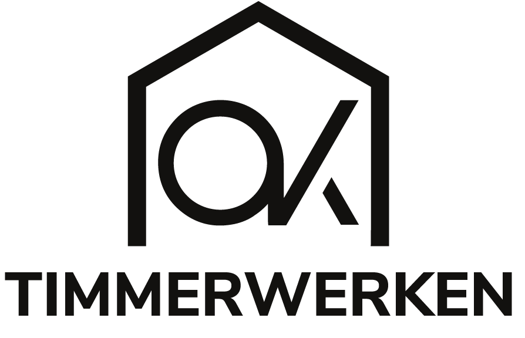
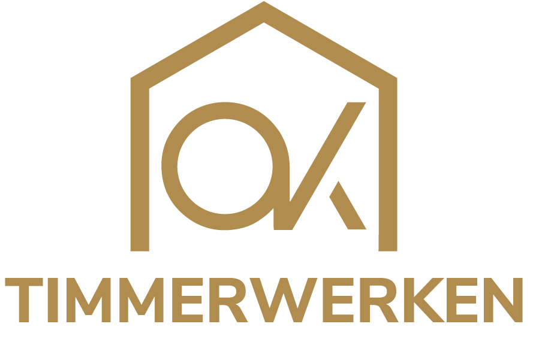

Huidig logo in één kleur, naast concept 5
De twee richtingen die je noemde, in dezelfde contexten. De schakelaar zet het messing accent aan of uit.
Het huidige logo, eenkleur
Dezelfde vorm als nu, maar de goud- en zilververlopen zijn vervangen door één vlakke kleur. Daardoor werkt het ineens wél op zwart, in borduurwerk, in een gravure en in zeefdruk.

wit op zwart
zwart op crème
messing op zwartKeper
Een dakvlak dat als een luifel over de letters OK heen ligt. Combineert de naam met het vak, zonder het huis helemaal uit te tekenen.
Let op: Drie losse onderdelen; het is het drukste van de acht en verliest het meest bij verkleining.
Of allebei
Het hoeft geen of-of te zijn. De gevelvorm van het huidige logo en de keper van concept 5 zijn dezelfde gedachte. Een derde weg: de huidige gevel opnieuw als vector tekenen, met het monogram vervangen door een leesbare OK — dan houd je de herkenning én los je het echte probleem op. Zeg het maar, dan teken ik die.